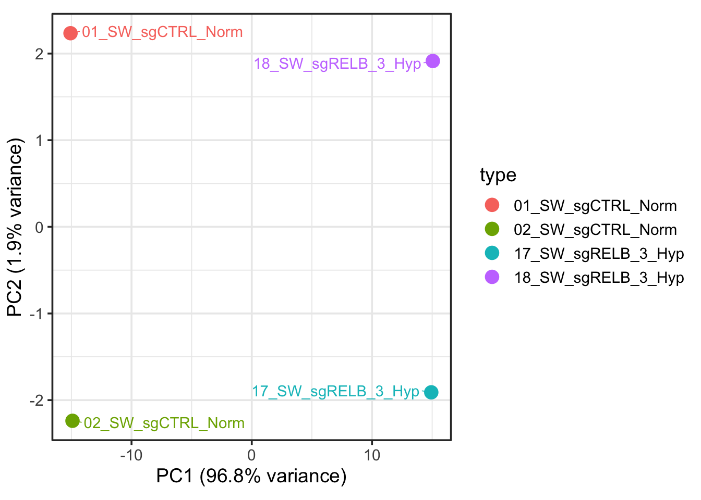
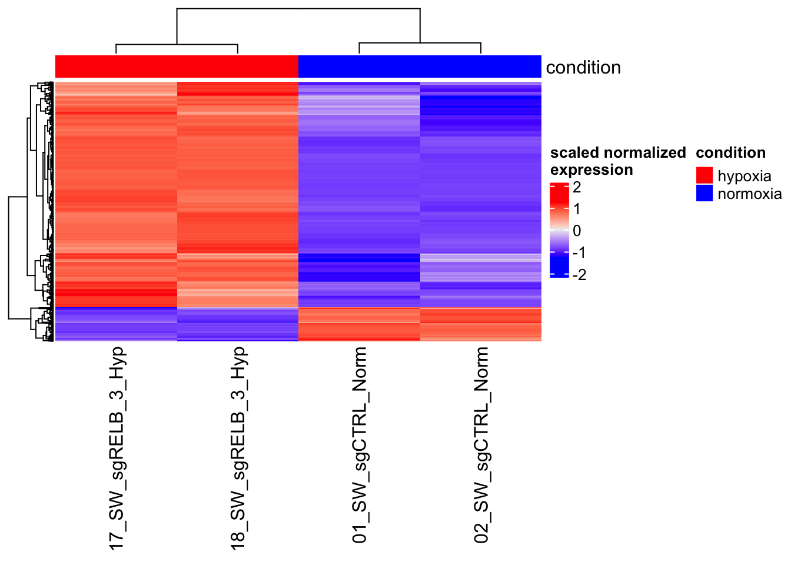

2DE_Heatmap
Quarto
This is a Quarto document. Quarto is a multi-language, next-generation version of R Markdown. Check the tutorial.
N.B. - Learn the IT foundations to master bioinformatics tools and softwares, and prevent getting tangled on the infamous “dependency hell”. Ask for the “Foundations of Bioinformatics Infrastructure”.
Create and activate the environment “bioinfo”
Download the RNA-seq dataset
Let’s use a real example - RNA-seq of ITPR3 and RELB knockout in SW480 under normoxia and hypoxia (Homo sapiens) https://www.ncbi.nlm.nih.gov/geo/query/acc.cgi?acc=GSE197576.

N.B. - Structure properly your folder (‘mkdir folder’):
.
├── data/
├── scripts/
└── results/How to download the files from FTP with UNIX terminal: https://www.ncbi.nlm.nih.gov/geo/info/download.html
https://ftp.ncbi.nlm.nih.gov/geo/series/GSE197nnn/GSE197576/suppl/
Alternative use GEOquery https://bioconductor.org/packages/release/bioc/html/GEOquery.html.
Check the data ad extract the samples of interest
Check the data in the compressed RNA-seq file.
Install csvtk annd check the data in a pretty aligned manner.
gene
01_SW_sgCTRL_Norm
02_SW_sgCTRL_Norm
03_SW_sgITPR3_1_Norm
04_SW_sgITPR3_1_Norm
07_SW_sgRELB_3_Norm
08_SW_sgRELB_3_Norm
11_SW_sgCTRL_Hyp
12_SW_sgCTRL_Hyp
13_SW_sgITPR3_1_Hyp
14_SW_sgITPR3_1_Hyp
17_SW_sgRELB_3_Hyp
18_SW_sgRELB_3_HypN.B - Get csvtk at https://github.com/shenwei356/csvtk
Extract the gene expression values from:
| 01_SW_sgCTRL_Norm | 02_SW_sgCTRL_Norm | 17_SW_sgRELB_3_Hyp | 18_SW_sgRELB_3_Hyp |
gene 01_SW_sgCTRL_Norm 02_SW_sgCTRL_Norm 17_SW_sgRELB_3_Hyp 18_SW_sgRELB_3_Hyp
DDX11L1 0 0 0 0
WASH7P 18 11 30 25
MIR6859-1 5 1 8 5
MIR1302-2HG 0 0 0 0
MIR1302-2 0 0 0 0
FAM138A 0 0 0 0
OR4F5 0 0 0 0
LOC100996442 9 3 15 20
LOC729737 3 3 33 45Your /data folder now contains:
data/
├── GSE197576_raw_gene_counts_matrix.tsv.gz
└── raw.counts.tsvRead the data into R and make a DESeq2 object
Follow the tutorial http://bioconductor.org/packages/devel/bioc/vignettes/DESeq2/inst/doc/DESeq2.html.
Setup
Install the R-packages for this project within the ‘bioinfo’ virtual environment.
Save the environment for reproducibility.
Open RStudio from the terminal: you are now working with the R software within ‘bioinfo’ and you can find the packages previously installed.
Let’s start
library(dplyr) #https://dplyr.tidyverse.org/
library(readr) #https://readr.tidyverse.org/
library(here) #https://cran.r-project.org/web/packages/here/vignettes/here.html
library(DESeq2) #https://genomebiology.biomedcentral.com/articles/10.1186/s13059-014-0550-8
library(ggplot2)
library(ggrepel)
BiocManager::install("ComplexHeatmap")
library(ComplexHeatmap)
raw_counts <- read_tsv(here("01_Heatmap_Genomics/2_DE_Heatmap/data/raw.counts.tsv")) #import the dataset
raw_counts_mat <- raw_counts[, -1] %>% as.matrix #create the values matrix removing the first column for DESeq2
head(raw_counts_mat) 01_SW_sgCTRL_Norm 02_SW_sgCTRL_Norm 17_SW_sgRELB_3_Hyp 18_SW_sgRELB_3_Hyp
[1,] 0 0 0 0
[2,] 18 11 30 25
[3,] 5 1 8 5
[4,] 0 0 0 0
[5,] 0 0 0 0
[6,] 0 0 0 0 01_SW_sgCTRL_Norm 02_SW_sgCTRL_Norm 17_SW_sgRELB_3_Hyp
DDX11L1 0 0 0
WASH7P 18 11 30
MIR6859-1 5 1 8
MIR1302-2HG 0 0 0
MIR1302-2 0 0 0
FAM138A 0 0 0
18_SW_sgRELB_3_Hyp
DDX11L1 0
WASH7P 25
MIR6859-1 5
MIR1302-2HG 0
MIR1302-2 0
FAM138A 0Make a dataframe for the metadata.
# A tibble: 4 × 1
condition
* <chr>
1 normoxia
2 normoxia
3 hypoxia
4 hypoxia Make a DESeq2 object (tutorial).
[1] TRUEdds <- DESeqDataSetFromMatrix(countData = raw_counts_mat, #input object with design
colData = metaframe,
design = ~ condition)
dds <- DESeq(dds) #DE analysis
?results
res <- results(dds, contrast = c("condition", "hypoxia", "normoxia")) #extract results from the analysis
res %>%
as.data.frame() %>%
arrange(padj <= 0.1, abs(log2FoldChange) >= 2) %>% #filter significant and substantial expression changes
head(n = 10) baseMean log2FoldChange lfcSE stat pvalue padj
WASH7P 19.868995 0.41727500 0.5998607 0.6956198 0.4866669 0.6105208
MIR6859-1 4.356427 0.65513668 1.3035290 0.5025870 0.6152547 0.7232638
LOC100996442 10.646734 1.06292492 0.8520192 1.2475363 0.2122009 0.3229198
WASH9P 50.042666 0.04451088 0.3788408 0.1174923 0.9064699 0.9408732
LINC01409 12.417663 0.80294905 0.7708893 1.0415880 0.2976028 0.4204900
FAM87B 2.852901 -0.33928196 1.5932534 -0.2129492 0.8313666 0.8900030
LINC00115 24.063112 -0.30645340 0.5400642 -0.5674389 0.5704160 0.6854688
LOC100288175 162.124769 0.20237040 0.2175051 0.9304167 0.3521554 0.4798503
LOC105378948 39.581280 0.61997436 0.4277432 1.4494080 0.1472237 0.2390383
RNF223 9.592991 -0.79713059 0.8827150 -0.9030442 0.3665025 0.4942234 [1] "LOC729737" "LINC02593" "LOC107985728" "LOC107985376" "LINC02781"
[6] "LINC01714" "C1orf167" "NPPB" "PADI2" "PLA2G5" PCA Analysis to verify your results

You can make a PCA by yourself.
01_SW_sgCTRL_Norm 02_SW_sgCTRL_Norm 17_SW_sgRELB_3_Hyp
DDX11L1 10.31070 10.31070 10.31070
WASH7P 10.48764 10.46633 10.51233
MIR6859-1 10.40400 10.35764 10.41488
18_SW_sgRELB_3_Hyp
DDX11L1 10.31070
WASH7P 10.49477
MIR6859-1 10.39306[1] "sdev" "rotation" "center" "scale" "x" PC1 PC2 PC3 PC4
01_SW_sgCTRL_Norm -15.07327 2.234704 -1.602628 9.567716e-14
02_SW_sgCTRL_Norm -14.90781 -2.238765 1.619684 -4.871971e-15
17_SW_sgRELB_3_Hyp 14.92560 -1.909982 -1.893329 1.475209e-14
18_SW_sgRELB_3_Hyp 15.05548 1.914043 1.876273 1.168549e-13PC1_PC2 <- data.frame(
PC1 = pca_prcomp$x[,1],
PC2 = pca_prcomp$x[,2],
type = rownames(pca_prcomp$x)
)
var_explained <- (pca_prcomp$sdev^2) / sum(pca_prcomp$sdev^2)
pc1_percent <- round(var_explained[1] * 100, 1)
pc2_percent <- round(var_explained[2] * 100, 1)
ggplot(PC1_PC2, aes(x = PC1, y = PC2, col = type)) +
geom_point(size = 4) +
geom_text_repel(
aes(label = type),
box.padding = 0.5,
point.padding = 0.3,
segment.size = 0.3,
min.segment.length = 0
) +
labs(
x = paste0("PC1 (", pc1_percent, "% variance)"),
y = paste0("PC2 (", pc2_percent, "% variance)")
) +
coord_cartesian(clip = "off") +
theme_bw(base_size = 14) +
theme(
plot.margin = margin(10, 5, 10, 5),
legend.position = "right"
)
It is not exactly the same, what’s going on?
Make a perfect heatmap
[1] 967 4
You get this perfect looking heatmap because you select the genes that are different. So, no surprise at all!
# A tibble: 4 × 1
condition
* <chr>
1 normoxia
2 normoxia
3 hypoxia
4 hypoxia 
why scaling is important?